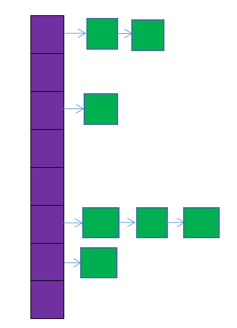
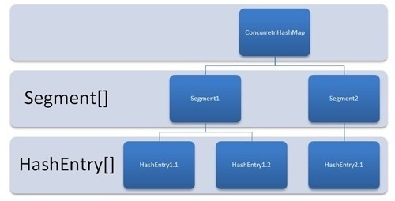
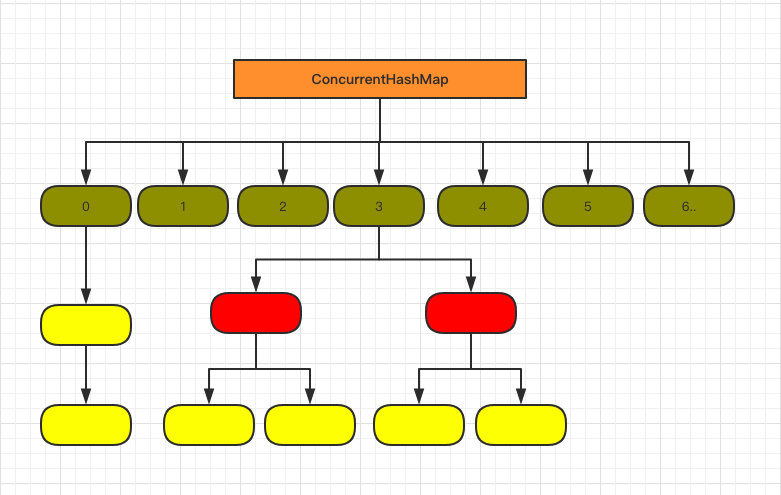

<!DOCTYPE HTML>
<html lang="">
<head><meta name="generator" content="Hexo 3.8.0">
    <!--Setting-->
    <meta charset="UTF-8">
    <meta name="viewport" content="width=device-width, user-scalable=no, initial-scale=1.0, maximum-scale=1.0, minimum-scale=1.0">
    <meta http-equiv="X-UA-Compatible" content="IE=Edge,chrome=1">
    <meta http-equiv="Cache-Control" content="no-siteapp">
    <meta http-equiv="Cache-Control" content="no-transform">
    <meta name="renderer" content="webkit|ie-comp|ie-stand">
    <meta name="apple-mobile-web-app-capable" content="Mute的博客">
    <meta name="apple-mobile-web-app-status-bar-style" content="black">
    <meta name="format-detection" content="telephone=no,email=no,adress=no">
    <meta name="browsermode" content="application">
    <meta name="screen-orientation" content="portrait">
    <link rel="dns-prefetch" href="http://yangliuxiao.top">
    <!--SEO-->

    <meta name="keywords" content="Java,面试">


    <meta name="description" content="HashTable和HashMap的区别详解
深入理解HashMap和CurrentHashMap
面试题:Concurrenthashmap原理分析

1. HashMapjava.util包...">


<meta name="robots" content="all">
<meta name="google" content="all">
<meta name="googlebot" content="all">
<meta name="verify" content="all">

    <!--Title-->


<title>Java容器类 | Mute的博客</title>


    <link rel="alternate" href="/atom.xml" title="Mute的博客" type="application/atom+xml">


    <link rel="icon" href="/favicon.jpg">

    


<link rel="stylesheet" href="/css/bootstrap.min.css?rev=3.3.7">
<link rel="stylesheet" href="/css/font-awesome.min.css?rev=4.5.0">
<link rel="stylesheet" href="/css/style.css?rev=@@hash">


    
	<div class="hide">
		<script type="text/javascript">
			var cnzz_protocol = (("https:" == document.location.protocol) ? " https://" : " http://");document.write(unescape("%3Cspan class='cnzz_stat_icon_1263868967 hide' %3E%3Cscript%20src%3D%22https%3A%2F%2Fs95.cnzz.com%2Fz_stat.php%3Fweb_id%3D1272564536%22%3E%3C%2Fscript%3E%3C/span%3E%3Cscript src='" + cnzz_protocol + "s19.cnzz.com/z_stat.php%3Fid%3D1263868967%26show%3Dpic1' type='text/javascript'%3E%3C/script%3E"));
		</script>
	</div>


    

</head>

</html>
<!--[if lte IE 8]>
<style>
    html{ font-size: 1em }
</style>
<![endif]-->
<!--[if lte IE 9]>
<div style="ie">你使用的浏览器版本过低，为了你更好的阅读体验，请更新浏览器的版本或者使用其他现代浏览器，比如Chrome、Firefox、Safari等。</div>
<![endif]-->

<body>
    <header class="main-header" style="background-image:url(/./img/background01.png)">
    <div class="main-header-box">
        <a class="header-avatar" href="/" title="Mute">
            
        </a>
        <div class="branding">
        	<!--<h2 class="text-hide">Snippet主题,从未如此简单有趣</h2>-->
            
                 
            
    	</div>
    </div>
</header>
    <nav class="main-navigation">
    <div class="container">
        <div class="row">
            <div class="col-sm-12">
                <div class="navbar-header"><span class="nav-toggle-button collapsed pull-right" data-toggle="collapse" data-target="#main-menu" id="mnav">
                    <span class="sr-only"></span>
                        <i class="fa fa-bars"></i>
                    </span>
                    <a class="navbar-brand" href="http://yangliuxiao.top">Mute的博客</a>
                </div>
                <div class="collapse navbar-collapse" id="main-menu">
                    <ul class="menu">
                        
                            <li role="presentation" class="text-center">
                                <a href="/"><i class="fa "></i>Home</a>
                            </li>
                        
                            <li role="presentation" class="text-center">
                                <a href="/archives/"><i class="fa "></i>时间轴</a>
                            </li>
                        
                            <li role="presentation" class="text-center">
                                <a href="/about/"><i class="fa "></i>关于</a>
                            </li>
                        
                    </ul>
                </div>
            </div>
        </div>
    </div>
</nav>
    <section class="content-wrap">
        <div class="container">
            <div class="row">
                <main class="col-md-8 main-content m-post">
                    <p id="process"></p>
<article class="post">
    <div class="post-head">
        <h1 id="Java容器类">
            
	            Java容器类
            
        </h1>
        <div class="post-meta">
    
        <span class="categories-meta fa-wrap">
            <i class="fa fa-folder-open-o"></i>
            <a class="category-link" href="/categories/Java技术/">Java技术</a>
        </span>
    

    
        <span class="fa-wrap">
            <i class="fa fa-tags"></i>
            <span class="tags-meta">
                
                    <a class="tag-link" href="/tags/Java/">Java</a> <a class="tag-link" href="/tags/面试/">面试</a>
                
            </span>
        </span>
    

    
        
        <span class="fa-wrap">
            <i class="fa fa-clock-o"></i>
            <span class="date-meta">2019/09/25</span>
        </span>
        
    
</div>
            
            
    </div>
    
    <div class="post-body post-content">
        <p><a href="https://www.cnblogs.com/williamjie/p/9099141.html" target="_blank" rel="noopener">HashTable和HashMap的区别详解</a></p>
<p><a href="https://www.cnblogs.com/fsychen/p/9361858.html" target="_blank" rel="noopener">深入理解HashMap和CurrentHashMap</a></p>
<p><a href="https://www.cnblogs.com/shan1393/p/9020564.html" target="_blank" rel="noopener">面试题:Concurrenthashmap原理分析</a></p>
<hr>
<h4 id="1-HashMap"><a href="#1-HashMap" class="headerlink" title="1. HashMap"></a>1. HashMap</h4><p>java.util包下的一个数据结构。</p>
<p>HashMap是基于<strong>哈希表</strong>实现的，每一个元素是一个key-value对，其<strong>内部通过单链表解决冲突问题</strong>，容量不足（超过了阀值）时，同样会<strong>自动增长</strong>。</p>
<p>HashMap是<strong>非线程安全</strong>的，只用于单线程环境下，多线程环境下可以采用<strong>concurrent并发包下concurrentHashMap</strong>。</p>
<p>HashMap 实现了Serializable接口，因此它支持序列化，实现了Cloneable接口，能被克隆。</p>
<p> HashMap存数据的过程是：</p>
<blockquote>
<p>HashMap内部维护了一个<strong>存储数据的Entry数组</strong>，HashMap采用链表解决冲突，每一个<strong>Entry本质上是一个单向链表</strong>。当准备添加一个key-value对时，首先通过<strong>hash(key)方法计算hash值</strong>，然后通过indexFor(hash,length)求该key-value对的存储位置，计算方法是先用hash&amp;0x7FFFFFFF后，再对length取模，这就保证每一个key-value对都能存入HashMap中，当计算出的位置相同时，由于存入位置是一个链表，则把这个key-value对插入链表头。</p>
</blockquote>
<p><strong>HashMap中key和value都允许为null。key为null的键值对永远都放在以table[0]为头结点的链表中。</strong></p>
<p>HashMap的存储结构，如下图所示：</p>
<p></p>
<p>图中，紫色部分即代表哈希表，也称为哈希数组，数组的每个元素都是一个单链表的头节点，链表是用来解决冲突的，如果不同的key映射到了数组的同一位置处，就将其放入单链表中。</p>
<p> HashMap内存储数据的<strong>Entry数组默认是16</strong>，如果没有对Entry扩容机制的话，当存储的数据一多，Entry内部的链表会很长，这就失去了HashMap的存储意义了。所以<strong>HasnMap内部有自己的扩容机制</strong>。HashMap内部有：</p>
<blockquote>
<p><strong>变量size</strong>，它记录HashMap的底层数组中已用槽的数量；</p>
<p><strong>变量threshold</strong>，它是HashMap的阈值，用于判断是否需要调整HashMap的容量（threshold = 容量*加载因子）</p>
<p><strong>变量DEFAULT_LOAD_FACTOR = 0.75f</strong>，默认加载因子为0.75</p>
<p>HashMap扩容的条件是：当size大于threshold时，对HashMap进行扩容</p>
<p>扩容是是新建了一个HashMap的底层数组，而后调用transfer方法，将就HashMap的全部元素添加到新的HashMap中（要重新计算元素在新的数组中的索引位置）。 很明显，<strong>扩容是一个相当耗时的操作</strong>，因为它需要重新计算这些元素在新的数组中的位置并进行复制处理。因此，我们在用HashMap的时，最好能提前预估下HashMap中元素的个数，这样有助于提高HashMap的性能。</p>
</blockquote>
<p>HashMap共有四个构造方法。构造方法中提到了两个很重要的参数：初始容量和加载因子。这两个参数是影响HashMap性能的重要参数，其中容量表示哈希表中槽的数量（即哈希数组的长度），初始容量是创建哈希表时的容量（从构造函数中可以看出，如果不指明，则默认为16），加载因子是哈希表在其容量自动增加之前可以达到多满的一种尺度，当哈希表中的条目数超出了加载因子与当前容量的乘积时，则要对该哈希表进行 resize 操作（即扩容）。</p>
<p>下面说下加载因子，<strong>如果加载因子越大，对空间的利用更充分，但是查找效率会降低（链表长度会越来越长）</strong>；如果加载因子太小，那么表中的数据将过于稀疏（很多空间还没用，就开始扩容了），对空间造成严重浪费。如果我们在构造方法中不指定，则系统默认加载因子为0.75，这是一个比较理想的值，一般情况下我们是无需修改的。</p>
<p>另外，<strong>无论我们指定的容量为多少，构造方法都会将实际容量设为不小于指定容量的2的次方的一个数，且最大值不能超过2的30次方</strong></p>
<h5 id="1-1-为什么要用红黑树，而不用平衡二叉树？"><a href="#1-1-为什么要用红黑树，而不用平衡二叉树？" class="headerlink" title="1.1 为什么要用红黑树，而不用平衡二叉树？"></a>1.1 为什么要用红黑树，而不用平衡二叉树？</h5><blockquote>
<p>插入效率比平衡二叉树高，查询效率比普通二叉树高。所以选择性能相对折中的红黑树。</p>
</blockquote>
<h5 id="1-2-重写对象的equals方法时，要重写hashCode方法，为什么？跟HashMap有什么关系？"><a href="#1-2-重写对象的equals方法时，要重写hashCode方法，为什么？跟HashMap有什么关系？" class="headerlink" title="1.2 重写对象的equals方法时，要重写hashCode方法，为什么？跟HashMap有什么关系？"></a>1.2 重写对象的equals方法时，要重写hashCode方法，为什么？跟HashMap有什么关系？</h5><blockquote>
<p> equals与hashcode间的关系:</p>
<ol>
<li><p><strong>如果两个对象相同（即用equals比较返回true），那么它们的hashCode值一定要相同；</strong></p>
</li>
<li><p><strong>如果两个对象的hashCode相同，它们并不一定相同(即用equals比较返回false)</strong>，但如果不同对象的hashCode不同可以提高效率。</p>
</li>
</ol>
<p>因为在 HashMap 的链表结构中遍历判断的时候，特定情况下重写的 equals 方法比较对象是否相等的业务逻辑比较复杂，循环下来更是影响查找效率。所以这里把 hashcode 的判断放在前面，只要 hashcode 不相等就结束，不用再去调用复杂的 equals 了。很多程度地提升 HashMap 的使用效率。</p>
<p>所以重写equals()方法要重写hashCode()方法，使得相同对象的hashCode相同。</p>
</blockquote>
<h5 id="1-3-HashMap为什么不直接使用对象的原始hash值呢"><a href="#1-3-HashMap为什么不直接使用对象的原始hash值呢" class="headerlink" title="1.3 HashMap为什么不直接使用对象的原始hash值呢?"></a>1.3 HashMap为什么不直接使用对象的原始hash值呢?</h5><figure class="highlight java"><table><tr><td class="gutter"><pre><span class="line">1</span><br><span class="line">2</span><br><span class="line">3</span><br><span class="line">4</span><br></pre></td><td class="code"><pre><span class="line"><span class="function"><span class="keyword">static</span> <span class="keyword">final</span> <span class="keyword">int</span> <span class="title">hash</span><span class="params">(Object key)</span> </span>&#123;</span><br><span class="line">    <span class="keyword">int</span> h;    </span><br><span class="line">    <span class="keyword">return</span> (key == <span class="keyword">null</span>) ? <span class="number">0</span> : (h = key.hashCode()) ^ (h &gt;&gt;&gt; <span class="number">16</span>);</span><br><span class="line">&#125;</span><br></pre></td></tr></table></figure>
<p>我们发现，HashMap的哈希值是通过上面的方式获取，而不是通过<code>key.hashCode()</code>方法获取。</p>
<p>原因：</p>
<blockquote>
<p>通过移位和异或运算，可以让 hash 变得更复杂，进而影响 hash 的分布性。</p>
</blockquote>
<h5 id="1-4-既然红黑树那么好，为啥hashmap不直接采用红黑树，而是当大于8个的时候才转换红黑树？"><a href="#1-4-既然红黑树那么好，为啥hashmap不直接采用红黑树，而是当大于8个的时候才转换红黑树？" class="headerlink" title="1.4  既然红黑树那么好，为啥hashmap不直接采用红黑树，而是当大于8个的时候才转换红黑树？"></a>1.4  既然红黑树那么好，为啥hashmap不直接采用红黑树，而是当大于8个的时候才转换红黑树？</h5><p>因为红黑树需要进行左旋，右旋操作， 而单链表不需要。</p>
<p>以下都是单链表与红黑树结构对比。</p>
<p>如果元素小于8个，查询成本高，新增成本低。</p>
<p>如果元素大于8个，查询成本低，新增成本高。</p>
<p>至于为什么选数字8，是折中衡量的结果，就像loadFactor默认值0.75一样。</p>
<hr>
<h4 id="2-Hashtable"><a href="#2-Hashtable" class="headerlink" title="2. Hashtable"></a>2. Hashtable</h4><p><strong>java.util包下的一个数据结构，继承自Dictionary类。</strong></p>
<p>Hashtable<strong>同样是基于哈希表实现的，同样每个元素是一个key-value对，其内部也是通过单链表解决冲突问题，容量不足（超过了阀值）时，同样会自动增长。</strong></p>
<p>Hashtable也是JDK1.0引入的类，是<strong>线程安全的，能用于多线程环境中</strong>。</p>
<p>Hashtable同样实现了Serializable接口，它支持序列化，实现了Cloneable接口，能被克隆。</p>
<hr>
<h4 id="3-HashMap与Hashtable的异同"><a href="#3-HashMap与Hashtable的异同" class="headerlink" title="3. HashMap与Hashtable的异同"></a>3. HashMap与Hashtable的异同</h4><h5 id="3-1-继承的父类不同"><a href="#3-1-继承的父类不同" class="headerlink" title="3.1 继承的父类不同"></a>3.1 继承的父类不同</h5><p>Hashtable继承自Dictionary类，而HashMap继承自AbstractMap类。但二者都实现了Map接口。</p>
<h5 id="3-2-线程安全性不同"><a href="#3-2-线程安全性不同" class="headerlink" title="3.2 线程安全性不同"></a>3.2 线程安全性不同</h5><p> Hashtable 中的方法是Synchronize的，而HashMap中的方法在缺省情况下是非Synchronize的。</p>
<p>在多线程并发的环境下，可以直接使用Hashtable，不需要自己为它的方法实现同步，但使用HashMap时就必须要自己增加同步处理。这一般通过对自然封装该映射的对象进行同步操作来完成。如果不存在这样的对象，则应该使用 <a href="http://write.blog.csdn.net/postedit/51556314#synchronizedMap(java.util.Map" target="_blank" rel="noopener">Collections.synchronizedMap</a>方法来“包装”该映射。最好在创建时完成这一操作，以防止对映射进行意外的非同步访问，如下所示：</p>
<figure class="highlight java"><table><tr><td class="gutter"><pre><span class="line">1</span><br></pre></td><td class="code"><pre><span class="line">Map m = Collections.synchronizedMap(<span class="keyword">new</span> HashMap(...));</span><br></pre></td></tr></table></figure>
<p> Hashtable 线程安全很好理解，因为它每个方法中都加入了Synchronize。</p>
<h5 id="3-3-是否提供contains方法"><a href="#3-3-是否提供contains方法" class="headerlink" title="3.3 是否提供contains方法"></a>3.3 是否提供contains方法</h5><p> HashMap把Hashtable的contains方法去掉了，改成containsValue和containsKey，因为contains方法容易让人引起误解。</p>
<p>Hashtable则保留了contains，containsValue和containsKey三个方法，<strong>其中contains和containsValue功能相同。</strong></p>
<h5 id="3-4-key和value是否允许null值"><a href="#3-4-key和value是否允许null值" class="headerlink" title="3.4 key和value是否允许null值"></a>3.4 key和value是否允许null值</h5><p>其中key和value都是对象，并且不能包含重复key，但可以包含重复的value。</p>
<p><strong>Hashtable中，key和value都不允许出现null值</strong>。但是如果在Hashtable中有类似put(null,null)的操作，编译同样可以通过，因为key和value都是Object类型，但运行时会抛出NullPointerException异常，这是JDK的规范规定的。  </p>
<p><strong>HashMap中，null可以作为键，这样的键只有一个；可以有一个或多个键所对应的值为null。</strong>当get()方法返回null值时，可能是 HashMap中没有该键，也可能使该键所对应的值为null。因此，在HashMap中不能由get()方法来判断HashMap中是否存在某个键， 而应该用containsKey()方法来判断。</p>
<h5 id="3-5-两个遍历方式的内部实现上不同"><a href="#3-5-两个遍历方式的内部实现上不同" class="headerlink" title="3.5 两个遍历方式的内部实现上不同"></a>3.5 两个遍历方式的内部实现上不同</h5><p>Hashtable、HashMap都使用了 Iterator。而由于历史原因，Hashtable还使用了Enumeration(枚举)的方式 。</p>
<h5 id="3-6-hash值不同"><a href="#3-6-hash值不同" class="headerlink" title="3.6 hash值不同"></a>3.6 hash值不同</h5><p>哈希值的使用不同，<strong>HashTable直接使用对象的hashCode。而HashMap重新计算hash值</strong>。</p>
<p><strong>hashCode是jdk根据对象的地址或者字符串或者数字算出来的int类型的数值。</strong></p>
<p>Hashtable计算hash值，直接用key的hashCode()，而HashMap重新计算了key的hash值，Hashtable在求hash值对应的位置索引时，用取模运算，而HashMap在求位置索引时，则用与运算，且这里一般先用hash&amp;0x7FFFFFFF后，再对length取模，&amp;0x7FFFFFFF的目的是为了将负的hash值转化为正值，因为hash值有可能为负数，而&amp;0x7FFFFFFF后，只有符号外改变，而后面的位都不变。</p>
<h5 id="3-7-内部实现使用的数组初始化和扩容方式不同"><a href="#3-7-内部实现使用的数组初始化和扩容方式不同" class="headerlink" title="3.7 内部实现使用的数组初始化和扩容方式不同"></a>3.7 内部实现使用的数组初始化和扩容方式不同</h5><p>HashTable在不指定容量的情况下的默认容量为11，而HashMap为16。</p>
<p>Hashtable不要求底层数组的容量一定要为2的整数次幂，而HashMap则要求一定为2的整数次幂。  </p>
<p>Hashtable扩容时，将容量变为原来的2倍加1(old <em> 2 + 1)，而HashMap扩容时，将容量变为原来的2倍(old </em> 2)。</p>
<hr>
<h4 id="4-ConcurrentHashMap"><a href="#4-ConcurrentHashMap" class="headerlink" title="4. ConcurrentHashMap"></a>4. ConcurrentHashMap</h4><p><strong>Java1.7时使用Segment保证同步。数据结构如下：</strong></p>
<p></p>
<p>由 Segment 数组、HashEntry 组成，和 HashMap 一样，仍然是数组加链表。</p>
<blockquote>
<p>原理上来说：ConcurrentHashMap 采用了<strong>分段锁</strong>技术，其中 Segment <strong>继承于 ReentrantLock</strong>。不会像 HashTable 那样不管是 put 还是 get 操作都需要做同步处理，理论上 ConcurrentHashMap 支持 CurrencyLevel (Segment 数组数量)的线程并发。<strong>每当一个线程占用锁访问一个 Segment 时，不会影响到其他的 Segment。</strong></p>
</blockquote>
<p>虽然 HashEntry 中的 value 是用 volatile 关键词修饰的，但是并不能保证并发的原子性，所以 put 操作时仍然需要加锁处理。</p>
<p><strong>put操作</strong>的第一步的时候会尝试获取锁，如果获取失败肯定就有其他线程存在竞争，则利用 <code>scanAndLockForPut()</code> <strong>自旋获取锁。</strong>如果重试的次数达到了 <code>MAX_SCAN_RETRIES</code> 则改为阻塞锁获取，保证能获取成功。</p>
<p>而<strong>get操作</strong>由于 HashEntry 中的 value 属性是用 volatile 关键词修饰的，保证了内存可见性，所以每次获取时都是最新值。<strong>整个过程都不需要加锁</strong>。</p>
<p>由于和HashMap一样，存在链表过长之后查询效率低的缺点。Java1.8的数据结构如下</p>
<p></p>
<p><strong>其中抛弃了原有的 Segment 分段锁，而采用了 <code>CAS + synchronized</code> 来保证并发安全性。（CAS，Compare And Swap,比较并且替换）</strong></p>
<p>1.8 在 1.7 的数据结构上做了大的改动，<strong>采用红黑树</strong>之后可以保证查询效率（<code>O(logn)</code>），甚至<strong>取消了 ReentrantLock 改为了 synchronized</strong>，这样可以看出在新版的 JDK 中对 synchronized 优化是很到位的。</p>
<p>CAS技术：（  CAS算法即是：Compare And Swap,比较并且替换）</p>
<blockquote>
<p>CAS算法存在着三个参数，内存值V，旧的预期值A，以及要更新的值B。<strong>当且仅当内存值V和预期值B相等的时候，才会将内存值修改为B，否则什么也不做，直接返回false;</strong></p>
<p>比如说某一个线程要修改某个字段的值，当这个值初始化的时候会在内存中完成，根据Java内存模型，该线程保存着这个变量的一个副本；当且仅当这个变量的副本和内存的值如果相同，那么就可以完成对值得修改，并且这个<strong>CAS操作完全是原子性的操作</strong>，也就是说此时这个操作不可能被中断。</p>
<ol>
<li><p><strong>Unasfe是CAS的核心类，通过这个类可以获取字段在内存中的地址偏移量；Unsafe是native的，我们一般不可能使用；这是Java对硬件操作的支持；</strong></p>
</li>
<li><p><strong>valueOffset是地址偏移量（变量在内存中的地址偏移量）</strong></p>
</li>
<li><p><strong>value是使用volatile修饰的，保证了内存的可见性；</strong></p>
</li>
</ol>
</blockquote>

    </div>
    
    <div class="post-footer">
        <div>
            
        </div>
        <div>
            
        </div>
    </div>
</article>

<div class="article-nav prev-next-wrap clearfix">
    
    
        <a href="/2019/09/20/JavaIO模型/" class="next-post btn btn-default" title="Java IO模型">
            <span class="hidden-lg">下一篇</span>
            <span class="hidden-xs">Java IO模型</span><i class="fa fa-angle-right fa-fw"></i>
        </a>
    
</div>


                </main>
                
                    <aside id="article-toc" role="navigation" class="col-md-4">
    <div class="widget">
        <h3 class="title">Table of Contents</h3>
        
            <ol class="toc"><li class="toc-item toc-level-4"><a class="toc-link" href="#1-HashMap"><span class="toc-text">1. HashMap</span></a><ol class="toc-child"><li class="toc-item toc-level-5"><a class="toc-link" href="#1-1-为什么要用红黑树，而不用平衡二叉树？"><span class="toc-text">1.1 为什么要用红黑树，而不用平衡二叉树？</span></a></li><li class="toc-item toc-level-5"><a class="toc-link" href="#1-2-重写对象的equals方法时，要重写hashCode方法，为什么？跟HashMap有什么关系？"><span class="toc-text">1.2 重写对象的equals方法时，要重写hashCode方法，为什么？跟HashMap有什么关系？</span></a></li><li class="toc-item toc-level-5"><a class="toc-link" href="#1-3-HashMap为什么不直接使用对象的原始hash值呢"><span class="toc-text">1.3 HashMap为什么不直接使用对象的原始hash值呢?</span></a></li><li class="toc-item toc-level-5"><a class="toc-link" href="#1-4-既然红黑树那么好，为啥hashmap不直接采用红黑树，而是当大于8个的时候才转换红黑树？"><span class="toc-text">1.4  既然红黑树那么好，为啥hashmap不直接采用红黑树，而是当大于8个的时候才转换红黑树？</span></a></li></ol></li><li class="toc-item toc-level-4"><a class="toc-link" href="#2-Hashtable"><span class="toc-text">2. Hashtable</span></a></li><li class="toc-item toc-level-4"><a class="toc-link" href="#3-HashMap与Hashtable的异同"><span class="toc-text">3. HashMap与Hashtable的异同</span></a><ol class="toc-child"><li class="toc-item toc-level-5"><a class="toc-link" href="#3-1-继承的父类不同"><span class="toc-text">3.1 继承的父类不同</span></a></li><li class="toc-item toc-level-5"><a class="toc-link" href="#3-2-线程安全性不同"><span class="toc-text">3.2 线程安全性不同</span></a></li><li class="toc-item toc-level-5"><a class="toc-link" href="#3-3-是否提供contains方法"><span class="toc-text">3.3 是否提供contains方法</span></a></li><li class="toc-item toc-level-5"><a class="toc-link" href="#3-4-key和value是否允许null值"><span class="toc-text">3.4 key和value是否允许null值</span></a></li><li class="toc-item toc-level-5"><a class="toc-link" href="#3-5-两个遍历方式的内部实现上不同"><span class="toc-text">3.5 两个遍历方式的内部实现上不同</span></a></li><li class="toc-item toc-level-5"><a class="toc-link" href="#3-6-hash值不同"><span class="toc-text">3.6 hash值不同</span></a></li><li class="toc-item toc-level-5"><a class="toc-link" href="#3-7-内部实现使用的数组初始化和扩容方式不同"><span class="toc-text">3.7 内部实现使用的数组初始化和扩容方式不同</span></a></li></ol></li><li class="toc-item toc-level-4"><a class="toc-link" href="#4-ConcurrentHashMap"><span class="toc-text">4. ConcurrentHashMap</span></a></li></ol>
        
    </div>
</aside>

                
            </div>
        </div>
    </section>
    <footer class="main-footer">
    <div class="container">
        <div class="row">
        </div>
    </div>
</footer>

<a id="back-to-top" class="icon-btn hide">
	<i class="fa fa-chevron-up"></i>
</a>


    <div class="copyright">
    <div class="container">
        <div class="row">
            <div class="col-sm-12">
                <div class="busuanzi">
    
        Total:
        <strong id="busuanzi_value_site_pv">
            <i class="fa fa-spinner fa-spin"></i>
        </strong>
        &nbsp; | &nbsp;
        Visitors:
        <strong id="busuanzi_value_site_uv">
            <i class="fa fa-spinner fa-spin"></i>
        </strong>
    
</div>

            </div>
            <div class="col-sm-12">
                <span>Copyright &copy; 2017
                </span>

            </div>
        </div>
    </div>
</div>


    <script async src="//busuanzi.ibruce.info/busuanzi/2.3/busuanzi.pure.mini.js"></script>


<script src="/js/app.js?rev=@@hash"></script>

</body>
</html>